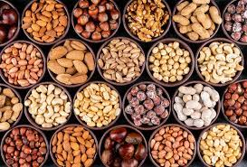

ABD'li bilim adamlarının 10 yıl süresince 86,000 kişi üzerinde gerçekleştirmiş oldukları bir araştırma ile kuruyemişlerin birçok hastalığa iyi geldiğini kanıtlandı. Fındık, fıstık, ceviz, badem, kabak çekirdeği gibi kabuklu yemişlerin, başta kalp sağlığı olmak üzere birçok rahatsızlık için birebir olduğu belirlendi.
Beslenme ve yaşama tarzına özen göstermeyenlerin bile kabuklu yemiş yiyerek kalp hastalıklarına yakalanma riskini yüzde 40 oranında düşürebildiği tespit edildi. Kabuklu kuruyemişlerin faydaları bununla da bitmiyor.
